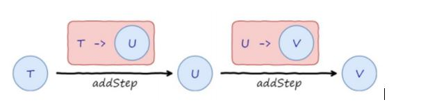
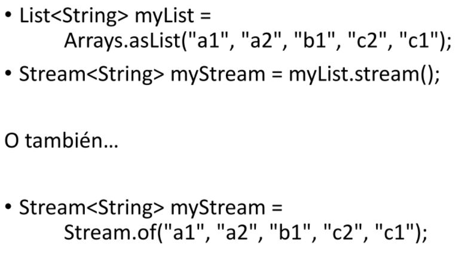
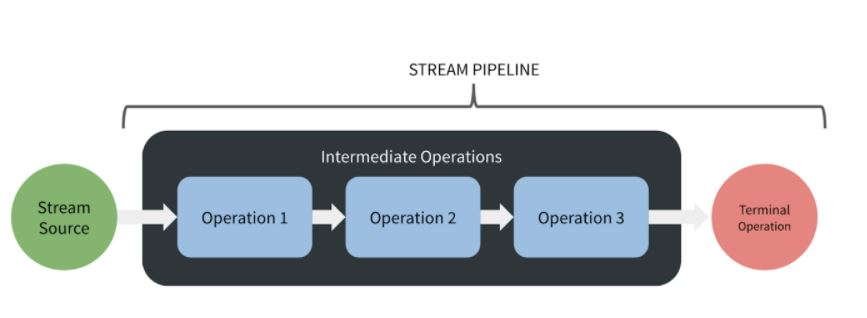

Java Streams
Java Streams Las Java Streams son lo que técnicamente, en programación funcional, se llama mónadas, que puesto de manera simple, son un tipo de objeto que contiene una serie de datos y que puede ser combinado en un flujo de procesamiento tipo pipeline: los datos pasan por una serie de procesos que piden transformarlos en cada paso, emitiendo nuevos datos, hasta lograr un dato o serie de datos final.



Un Stream, entonces, generalmente contiene una serie de elementos, que puede generarse, por ejemplo, a partir de una colección:
- Los Stream tienen operaciones intermedias, que devuelven una nueva Stream transformada, que se puede seguir encadenando, pero que solo se ejecutan cuando en el pipeline existe una operación terminal
- Las Stream pueden ser seriales o paralelas. Aquellas seriales se procesaran en un solo hilo, y aquellas paralelas se procesaran en varios hilos, de manera automática, gracias al uso de ForkJoinPool del sistema.
Operaciones Intermedias y Terminales:
Las operaciones intermedias son aquellas que devuelven un Stream transformada y las terminales cierran el pipeline.